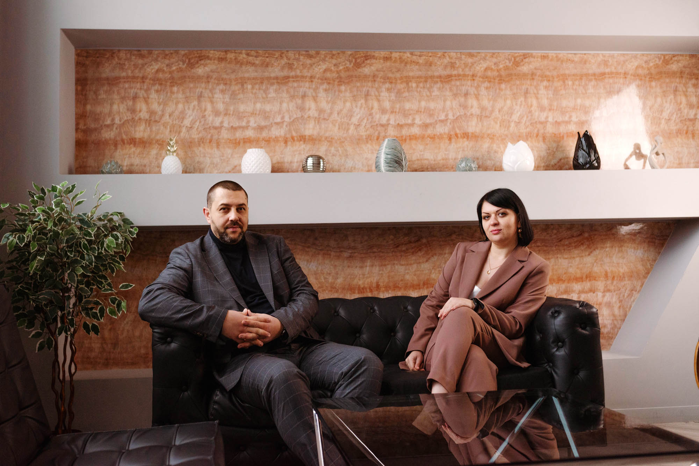

Послуги
Юридична компанія «OTS» - це команда професіоналів, яка створена в умовах симбіозу досвіду адвокатів зі стажем та
наполегливості молодих фахівців у різноманітних галузях права. Адвокати та юристи ЮК «OTS» гарантують якість своїх
послуг, оскільки на меті ми маємо насамперед результат, що влаштовує клієнта.

Правники ЮК «OTS» загартовані багаторічним досвідом судових процесів на різних стадіях та юрисдикціях, що дозволяє клієнту бути
впевненим у виборі під час проходження складного шляху судових спорів.
Адвокати ЮК «OTS» в процесі вивчення документів, консультації чи формування правової позиції віддають перевагу глибокому
аналізу кожної проблеми чи проекту, надаючи в результаті дійсно корисний та конкурентоспроможний кінцевий правничий продукт.
Досвід наших адвокатів охоплює такі сфери: представництво громадян та юридичних осіб в цивільних, господарських, адміністративних,
кримінальних справах, супровід господарської діяльності ресторанного бізнесу, транспортних перевезень, експортерів та
імпортерів запчастин та с/г продукції, енергоносіїв, у т.ч. вугільної промисловості.
Починаючи з окупації суверенних територій України у 2014 році, фахівці ЮК «OTS» надають правничу допомогу військовослужбовцям
та військовозобов’язаним з метою захисту їх прав, свобод та законних інтересів. Необхідно зауважити, що за період повномасштабного
вторгнення, громадянські та соціальні права військових та призовників теж потребують ретельного, досконалого вивчення та захисту,
а тому за строк дії воєнного стану до нас вже звернулись та отримали допомогу сотні військовослужбовців з різних питань.
Для адвокатів ЮК «OTS» не існує задач, що не можна розв’язати, оскільки основним принципом, який ми пропагуємо у своїй практиці,
є шлях до мети, її досягнення, і, як наслідок, отримання задоволення від досягнутого результату.
Сімейний адвокат
За статистикою, однією з головних причин звернення до адвоката з питань сімейного права є розлучення подружжя. Але цей процес частіше за все супроводжується також поділом майна подружжя, визначенням місця проживання дитини з одним із батьків після розлучення, а також, визначенням розміру аліментів на дитину.
Адвокат по сімейним справам, який володіє достатнім досвідом у врегулюванні сімейних спорів у судовому порядку зможе зібрати та використати усі необхідні докази та факти, аби якнайкраще здійснити представництво ваших інтересів у судовому процесі.
Варто зауважити, що звертатись до сімейного адвоката найефективніше на досудовій стадії не зволікаючи, адже поява таких проблем, як додаткове долучення доказів, оскарження судового рішення, збільшення матеріальних затрат та нервів неминуче. Адвокати юридичної компанії «OTS», маючи вагомий досвід та глибинне знання законодавства, допоможуть вам у вирішенні таких питань, як:
- супровід процесу розлучення
- визнання шлюбу недійсним
- поділ майна подружжя
- визначення місця проживання дитини, встановлення порядку спілкування з дитиною
- оспорювання та встановлення батьківства
- вирішення спорів щодо усунення перешкод у спілкуванні з дитиною
- збільшення або зменшення розміру аліментів
- складання шлюбного договору, внесення змін або визнання його недійсним
- позбавлення батьківських прав тощо.
Ризик самостійного ведення справи та вирішення спору між подружжям може призвести до поза розумних майнових втрат, псуванню відносин, нервів, а також, до неможливості спілкування з дітьми. Тому, своєчасне звернення до адвоката по сімейним справам Юридичної компанії «OTS», який має неабиякий досвід у розробленні стратегії та здійснення захисту клієнта, допоможе уникнути зайвих кроків та отримати доступне вирішення вашої проблеми при мінімальній участі у справі клієнта. Слід пам’ятати, що сімейний адвокат потрібен не лише для вирішення проблем, а й задля запобіганню їх виникнення.
Чим раніше ви звернетесь до адвоката – тим більше шансів на захист ваших прав та законних інтересів.
Отримати юридичну консультацію та допомогу адвоката можливо за номером: +380 (67) 878-70-30
Спори у сфері банківського права
Банківська сфера охоплює неймовірно велику кількість різних категорій, але найчастіше за консультацією до кредитного адвоката звертаються по таким питанням:
- прострочення в погашенні заборгованості
- виселення з іпотечного майна
- неправомірне нарахування банком відсотків та штрафів
- заниження вартості іпотечного майна при продажі на аукціоні
- борг по мікрозайму, погрози колекторів
Звертаючись до адвоката по кредитним спорам ви можете отримати кваліфіковану консультацію, а надалі й допомогу у вирішенні проблеми з банківською установою або будь-яким позикодавцем.
Чим може допомогти адвокат по банківським справам?
- вести переговори з банком щодо погашення кредитної заборгованості з дисконтом
- представляти ваші інтереси в судах та державних органах, брати участь у судових засіданнях
- розробити Договір щодо погашення заборгованості (списання, реструктуризація) та супроводжувати вас при його підписанні у банківській установі
- ініціювати процес зменшення суми нарахованих штрафних санкцій
- зменшити або повністю списати кредитну заборгованість
- оскаржити дії державного чи приватного виконавця, закрити виконавче провадження та ін.
Таким чином, адвокати по банківським спорах юридичної компанії «OTS» допоможуть Вам зменшити розмір вашої заборгованості, зберегти Ваше іпотечне або заставлене майно та уникнути ще більших проблем з фінансовою установою. Ми працюємо по всій Україні з усіма банками та фінансовими компаніями, а найголовніше – маємо великий досвід у позитивному вирішенні спору на користь клієнта. Чим раніше ви звернетесь до адвоката – тим більше шансів на захист ваших прав та законних інтересів.
Отримати юридичну консультацію та допомогу адвоката можливо за номером: +380 (67) 878-70-30
Адвокат по кримінальних справах
Адвокат по кримінальних справах юридичної компанії «OTS» надає наступні послуги:
- ознайомлення з матеріалами кримінального провадження, проведення юридичного аналізу, надання консультації щодо можливості позитивного вирішення справи
- представництво та захист інтересів затриманої особи
- юридичний захист під час обрання запобіжного заходу (тримання під вартою, арешт, порука, особисте зобов’язання)
- виїзд адвоката для супроводу на слідчих чи процесуальних діях (вручення підозри, обшук, проведення слідчого експерименті, допит)
- правовий захист свідка, потерпілого, підозрюваного, обвинуваченого
- зняття арешту з майна, повернення тимчасово вилученого майна у рамках кримінального провадження
- зміна запобіжного заходу, застосування умовно-дострокового звільнення, перекваліфікація кримінального правопорушення
- представництво інтересів в суді, оскарження рішень в апеляційній та касаційній інстанції
Найголовніше, якщо з вами сталася неприємна ситуація - до приїзду адвоката не потрібно підписувати жодних документів, проводити жодних дій, не давати ніяких пояснень, а також не залучати безкоштовного адвоката.
Ключовими напрямками адвоката з кримінальних справ є:
- злочини проти життя та здоров’я
- військові злочини
- ДТП
- службові та корупційні злочини
- злочини у сфері господарської діяльності
- економічні та майнові злочини
Адвокат по кримінальних справах юридичної компанії «OTS» стежитиме за дотриманням ваших прав, законних інтересів, не допустить помилки, яка може позбавити невинного волі, підозрюваного – покарання, а потерпілого – покарання винної особи. Наші адвокати мають багаторічний досвід ведення кримінальних справ, тож зможуть максимально сприяти досягненню справедливого та бажаного результату для клієнта. Чим раніше ви звернетесь до адвоката – тим більше шансів на захист ваших прав та законних інтересів.
Отримати юридичну консультацію та допомогу адвоката можливо за номером: +380 (67) 878-70-30
Земельне право
Найчастіше до адвоката з питань земельного права звертаються з такими проблемами, як:
- визнання права власності на земельну ділянку
- порушення граничних меж земельної ділянки
- визнання недійсними угод, предметом яких є земля
- усунення перешкод у користуванні земельною ділянкою
- оскарження дій або бездіяльності державних органів і органів місцевого самоврядування
- вилучення земельної ділянки з чужого незаконного володіння
Адвокат із земельного права надає такі послуги, як:
- детальна консультація та проведення аналізу вашої документації з визначенням плану конкретних дій
- отримання втраченої земельної документації
- приватизація земельної ділянки
- внесення земельної ділянки до Державного земельного кадастру
- проведення юридичного аналізу документів перед купівлею земельної ділянки
- супроводження процедури купівлі-продажу, оренди або передачі під заставу земельної ділянки
- визначення граничних меж земельної ділянки
- зміна цільового призначення землі
- отримання безкоштовної земельної ділянки від держави
- визнання права власності на землю в судовому порядку та ін.
Звернутися до адвоката можна не лише коли вже є проблема, адже багатьох спірних питань можна уникнути ще на початку. Проте якщо спір вже існує, то адвокат по земельних питаннях юридичної компанії «OTS» зможе вступити в процес на будь-якій стадії та надати необхідну кваліфіковану допомогу для врегулювання питання максимально на користь клієнта.
Наші адвокати мають досвід у вирішенні різних земельних питань, а тому забезпечать Вам повну кваліфіковану підтримку. Чим раніше ви звернетесь до адвоката – тим більше шансів на захист ваших прав та законних інтересів.
Отримати юридичну консультацію та допомогу адвоката можливо за номером: +380 (67) 878-70-30
Житлові спори
Усі житлові спори умовно можна поділити на:
- спори по договору будівництва між забудовником і покупцем
- спори щодо переведення приміщення з нежитлового в житлове
- спори щодо виселення/вселення, суперечки між членами родини або декількома власниками
При своєчасному зверненні до адвоката з житлових спорів ви маєте всі шанси зберегти майно, отримати компенсацію при його пошкодженні, а також узаконити своє право власності у разі наявності спору.
Адвокат з житлових спорів допоможе у вирішенні таких питань, як:
- визнання недійсними договору купівлі-продажу, дарування, міни, застави
- вселення та виселення з житла, зняття або поновлення реєстрації
- встановлення порядку користування житлом
- оскарження при спадкуванні нерухомості
- припинення права власності
- приватизація житла
- оплата комунальних послуг (заборгованість, помилкове нарахування)
Адвокати юридичної компанії «OTS» професійно проаналізують вашу справу, враховуючи всі індивідуальні нюанси, та зорієнтують по перспективах вирішення питання з мінімальними фінансовими та часовими витратами. Команда наших адвокатів з житлових спорів, які протягом років накопичили знання та навички, необхідні для вирішення такої катергорії справ, нададуть весь спектр правових послуг, пов’язаних із супроводом судового розгляду справи та виконанням рішення суду за допомогою органів виконавчої влади. Чим раніше ви звернетесь до адвоката – тим більше шансів на захист ваших прав та законних інтересів.
Отримати юридичну консультацію та допомогу адвоката можливо за номером: +380 (67) 878-70-30
Адвокат з питань пенсійного законодавства
Адвокат з пенсійних питань зможе допомогти у таких випадках, як:
- перерахунок пенсії
- проблемні нарахування стажу
- бездіяльності органів Пенсійного фонду України, або у разі прийняття незаконних рішень
- затримці виплати пенсії
Крім цього, адвокат з пенсійних питань, займається вирішенням питань та непорозумінь, що виникли під час оформлення пенсії з інвалідності чи втрати годувальника, пенсії військовослужбовцям, сім'ям загиблих, учасникам бойових дій, інших видів пенсійного забезпечення. Також, ми надаємо якісну правову допомогу під час подання судових позовів до Пенсійного фонду України, супроводу виконання рішення тощо.
Послуги адвоката з пенсійного права:
- перерахунок пенсії
- оскарження рішень Пенсійного фонду України
- перерахунок трудового стажу
- збільшення пенсійних виплат
- представлення інтересів в державних органах та судах
- оформлення пенсії по інвалідності
Адвокати юридичної компанії «OTS» можуть Вам надати консультації навіть у випадках, коли Ви збираєтесь на пенсію, маєте бажання здійснити перерахунок та збільшити розмір пенсії, а також оформити пенсійну виплату у зв’язку з інвалідністю. Наші адвокати мають солідний досвід роботи з цією категорією справ, а тому допоможуть вирішити будь-яке питання в рамках чинного законодавства України, навіть якщо воно буде пов’язано з іншими галузями права. Чим раніше ви звернетесь до адвоката – тим більше шансів на захист ваших прав та законних інтересів.
Отримати юридичну консультацію та допомогу адвоката можливо за номером: +380 (67) 878-70-30
Адвокат по адміністративних справах
До сфер адміністративного права відноситься:
- оскарження постанови про порушення правил дорожнього руху
- оскарження постанови щодо порушення правил паркування
- притягнення до адміністративної та фінансової відповідальності контролюючими органами
- притягнення до дисциплінарної відповідальності
- оскарження дій або бездіяльності державних органів та їх посадових осіб
- перерахунок пенсії та ін.
Ризики самостійного вирішення адміністративного спору завжди є : притягнення до відповідальності, сплата штрафу, позбавлення на деякий термін можливості керувати автомобілем або іншим транспортним засобом та й взагалі є великий шанс послабити вашу позицію при розгляді справи. Адвокати по адміністративних питаннях юридичної компанії «OTS» знаються на своїй справі та допоможуть вам завершити розгляд справи з найменшими втратами для вас. Сформувати пакет документів, подати їх до суду, а також захистити ваші права та інтереси – все це та інше входить в пакет послуг адвоката з адміністративних питань для вирішення вашого питання за дуже доступними та лояльними цінами. Чим раніше ви звернетесь до адвоката – тим більше шансів на захист ваших прав та законних інтересів.
Отримати юридичну консультацію та допомогу адвоката можливо за номером: +380 (67) 878-70-30
Адвокат у сфері медичного права
Найчастіше до адвоката по медичним питаннях звертаються пацієнти задля:
- притягнення лікаря до відповідальності у разі неналежного виконання ним своїх обов’язків (ненадання допомоги, лікування не за протоколом, лікарська помилка та ін.)
- притягнення до відповідальності у разі розголошення лікарської таємниці
- відшкодування моральної та матеріальної шкоди, завданої медичним працівником або медичним закладом.
Послуги адвоката з медичного права зазвичай можуть охоплювати такий спектр послуг:
- надання детальної консультації та проведення юридичного аналізу документів з метою побудови майбутньої лінії захисту
- складання різного роду документів: позовної заяви, претензії, клопотань та адвокатських запитів та ін.
- ведення переговорів у досудовому порядку з представниками медичного закладу або безпосередньо з лікарем
- здійснення представництва ваших інтересів та законних прав у всіх державних органах та судах
- захист як пацієнта, так і лікаря від пред'явлення неправомірних претензій та звинувачень
- стягнення матеріальної та моральної шкоди у вигляді компенсації
Та варто пам’ятати, що адвокат не є лікарем, він не має медичної освіти, він не може досконало орієнтуватися в медичній термінології та діагнозах. Головне завдання адвоката – притягнути винного до відповідальності та отримати компенсацію за завдану моральну та/або матеріальну шкоду, спираючись на існуючі факти.
Адвокати юридичної компанії «OTS» вже неодноразово мали змогу захистити інтереси клієнта у справах щодо порушення норм медичного права і мають позитивні результати. Переговори у досудовому порядку або судовий процес – шлях вирішення і вашого питання. Чим раніше ви звернетесь до адвоката – тим більше шансів на захист ваших прав та законних інтересів.
Отримати юридичну консультацію та допомогу адвоката можливо за номером: +380 (67) 878-70-30
Спори у сфері спадкового права
На жаль, дуже часто виникає безліч супроводжуючих питань:
- пропущений строк для прийняття спадщини,
- неможливість правильно оформити майно через помилку спадкодавця,
- окрім спадкоємців за заповітом є спадкоємці за законом, які мають право на обов’язкову частку
- спадкоємець претендує на більшу частину майна, аніж може отримати та ін.
Коли виникають такі питання - необхідно звернутись за консультацією до адвоката, який спеціалізується на веденні спадкових справ. В ході консультації ви отримаєте чіткий план дій як самостійно вирішити проблему, або, підписавши Договір про надання юридичних послуг – доручити вирішення усіх проблем адвокату зі спадкових справ.
Адвокат по спадковим справам надає такі послуги:
- поновлення строку для прийняття спадщини у судовому порядку
- визнання свідоцтва про спадщину недійсним
- позбавлення права на спадщину недобросовісного спадкоємця
- оскарження заповіту
- отримання обов’язкової частки у спадщині
- встановлення юридичного факту (проживання зі спадкодавцем однією сім’єю, родинні зв’язки)
Адвокат зі спадкових справ надасть вичерпний обсяг інформації та покроковий алгоритм дій потенційному спадкоємцю, здійснить супровід оформлення необхідної документації та вирішить проблеми, які можуть виникнути в ході прийняття спадкового майна. Ризик самостійного ведення своєї справи та вирішення спору між спадкоємцями може призвести до втрати своєї частки майна.
Адвокати юридичної компанії «OTS» готові надати комплексну допомогу вам та зберегти майно, на яке ви маєте законні права. Більш того, компанія залучає кваліфікованого радника з питань спадкування. Чим раніше ви звернетесь до адвоката – тим більше шансів на захист ваших прав та законних інтересів.
Отримати юридичну консультацію та допомогу адвоката можливо за номером: +380 (67) 878-70-30
Адвокат по ДТП, страховим випадкам
До адвоката по ДТП варто звертатись за допомогою, якщо:
- потрібна консультація щодо можливих дій при ДТП та після
- сталося ДТП та потрібно проконтролювати процес фіксації співробітниками патрульної поліції (виїзд адвоката на місце ДТП) - складення протоколу, схеми ДТП, пояснень, виклик та/або повідомлення страхової про ДТП, заяви та інших необхідних дій.
- винуватець покинув місце ДТП – щоб чітко зафіксувати нюанси і далі мати змогу його розшукати та притягнути до відповідальності
- завдана матеріальна шкода автомобілю – для контролю процесу подальшого відшкодування завданих збитків
- страхова компанія затримує виплати, відмовляє у виплатах, занижує вартість відновлювального ремонту тощо
- потрібно повернути водійське посвідчення
- потрібно оскаржити дії або бездіяльність співробітників патрульної поліції або оскаржити їх протокол (статті 121, 122, 124 чи 130 КУпАП)
- отримано тілесні ушкодження або стався летальний випадок – щоб притягнути винного до кримінальної відповідальності та отримати матеріальну та моральну компенсацію з винної особи
Автоадвокат, керуючись власним досвідом та законодавством, збере всю необхідну доказову базу, підготує повний пакет документів та в подальшому здійснюватиме представництво у суді, в органах внутрішніх справ та перед страховою компанією.
Адвокат з ДТП допоможе:
- повернути водійське посвідчення
- притягнути винного до відповідальності
- отримати матеріальну та моральну компенсацію
- отримати виплату страхового випадку від страхової компанії
Тобто, звертаючись до адвоката, ви отримуєте юридичну допомогу від “А до Я”, Ваш процес буде повністю під контролем та в максимально короткі терміни адвокат вирішуватиме проблему. Ми не можемо гарантувати 100% результат, оскільки таким чином роблять лише шахраї, але ми обіцяємо виконати роботу і отримати для клієнта максимально позитивний результат. Адвокат з ДТП юридичної компанії «OTS» - адвокат-професіонал, для якого немає невирішувальної ситуації. Чим раніше Ви звернетесь до адвоката – тим більше шансів на захист Ваших прав та законних інтересів.
Отримати юридичну консультацію та допомогу адвоката можливо за номером: +380 (67) 878-70-30
Абонентське юридичне обслуговування
Все частіше українці починають користуватися такою юридичною послугою, як абонентське юридичне обслуговування, оскільки воно має певні переваги:
- можливість не наймати штатного юриста
- гнучка система оплати в залежності від обраної форми
- зв'язок з адвокатом 24/7
- швидкість і мобільність (виїзд на обшуки, при рейдерському захопленні, перевірках та ін.)
Постійна підтримка власного юриста (адвоката) дуже важлива для успішного ведення бізнесу, але не завжди є можливість виділити ціле робоче місце юристу та фінансово його забезпечувати, особливо у період карантину, військового стану, коли 50% бізнесу перейшли на дистанційну роботу. У такому разі, найвигідніше почати співпрацювати з адвокатом «на відстані», але при цьому, бути впевненим, що в разі чого - адвокат одразу відреагує на прохання або проблему свого клієнта.
Зазвичай, у пакет абонентського юридичного обслуговування бізнесу входять такі послуги:
- певна або необмежена кількість консультацій на місяць
- складання, зміна, розірвання певної або необхідної кількості договорів
- направлення адвокатських запитів задля швидкого отримання відповіді
- виїзд адвоката на обшуки, допити і та ін.
- здійснення представництва інтересів компанії (власника) перед державними органами, в суді
- розробка, зміна, оформлення корпоративних документів (договору про прийняття на роботу, розробка статуту та внесення змін, складання протоколів та ін.)
- тренінги персоналу та їх підготовка на випадок проведення обшуків та інших слідчих дій за їх участю
- досудове врегулювання спору та ін.
В юридичній компанії «OTS» діє доступна цінова політика та лояльні умови співпраці для бізнесу. Вартість щомісячного обслуговування вимальовується в залежності від обраного вами пакету послуг, що обговорюється та узгоджується безпосередньо з вами.
Отримати юридичну консультацію та допомогу адвоката можливо за номером: +380 (67) 878-70-30
Адвокат з питань захисту прав військовозобов’язаних/військовослужбовців
Найчастіше до адвоката з військового права звертаються з питаннями про :
- мобілізацію
- звільнення з військової служби
- пільги для військовослужбовців
- отримання одноразової грошової допомоги у разі загибелі військовослужбовця
- отримання військовослужбовцем додаткових виплат, відповідно до чинного законодавства України.
- перерахунок виплат військовослужбовцям у разі неналежного їх нарахування.
Послуги, які надає адвокат юридичної компанії «OTS»:
- консультація з питань призову та звільнення з військової служби
- захист при звинуваченні в ухиленні від служби
- допомога при розірванні контракту та звільненні зі служби
- оскарження висновків ВЛК
- оскарження незаконного звільнення зі служби
- оскарження незаконних дій уповноважених осіб керівництва військової частини, порушення ними умов контракту
- допомога з питань матеріально-соціального забезпечення військовослужбовців
- юридичний захист військових та ветеранів АТО
- правовий захист військовослужбовця у разі притягнення до кримінальної відповідальності
- оформлення документів на отримання інвалідності
- допомога родичам в отриманні одноразової грошової допомоги у разі загибелі військовослужбовця
Адвокати юридичної компанії «OTS» у сфері військового права з 2014 року, тому мають значний досвід у захисті клієнтів. Допомогу адвокати надають не тільки військовослужбовцям, мобілізованим, а і членам їх сімей, родичам. Звернувшись до військового адвоката за консультацією, Ви будете обізнані про свої права, та знати, як себе захистити. А у разі, коли самостійно впоратись важко – адвокат з військового права допоможе у вирішенні Вашого питання. Чим раніше ви звернетесь до адвоката – тим більше шансів на захист ваших прав та законних інтересів.
Отримати юридичну консультацію та допомогу адвоката можливо за номером: +380 (67) 878-70-30
LAW FIRM "OTS"
провідна юридична фірма з командою досвідчених адвокатів, готових допомогти вам з усіма вашими юридичними потребами.
Навігація
Корисні ресурси
© Created by Zghurskyi 2023